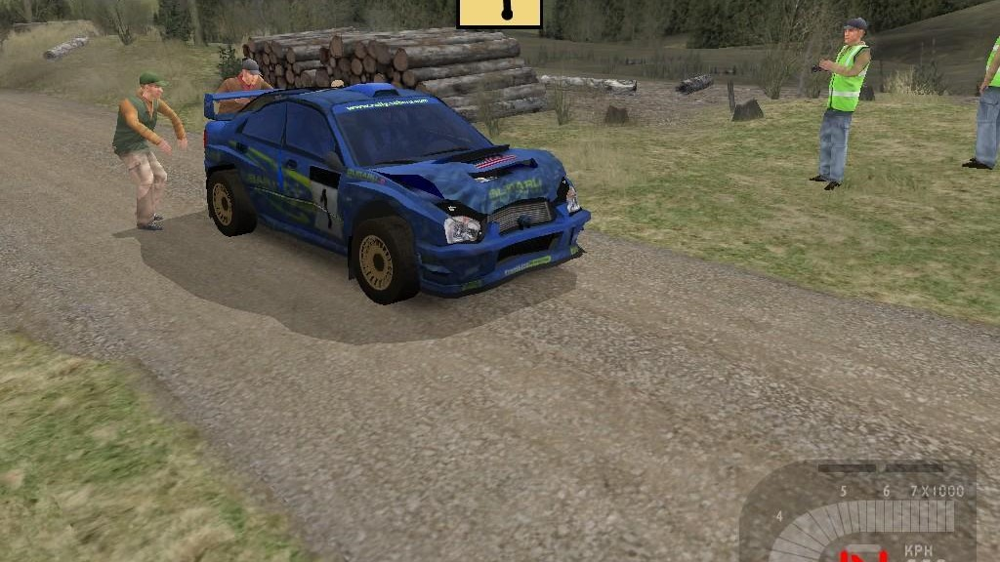
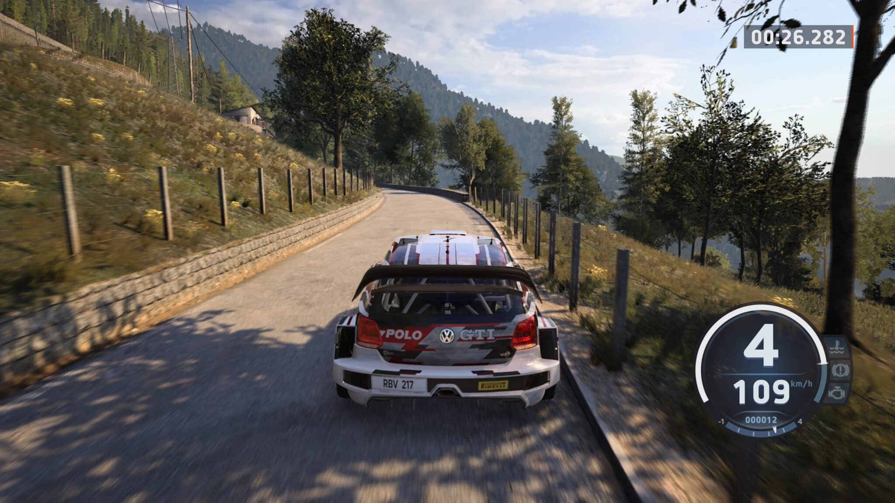
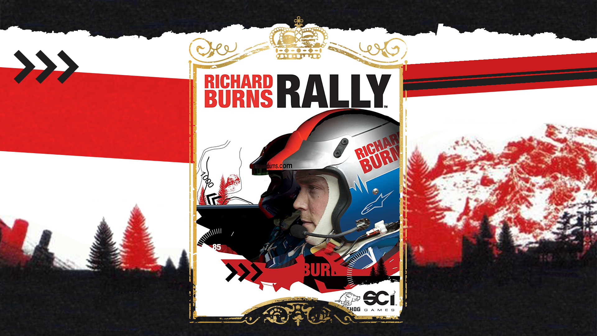
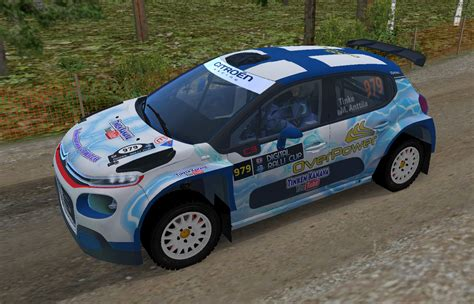
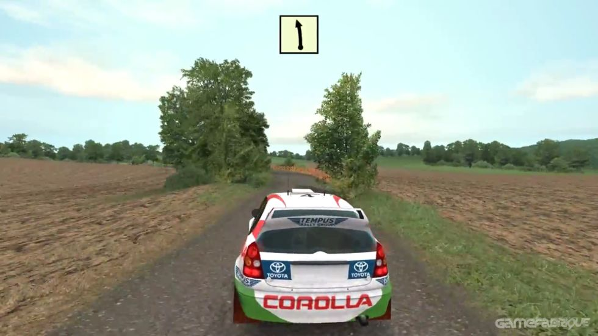
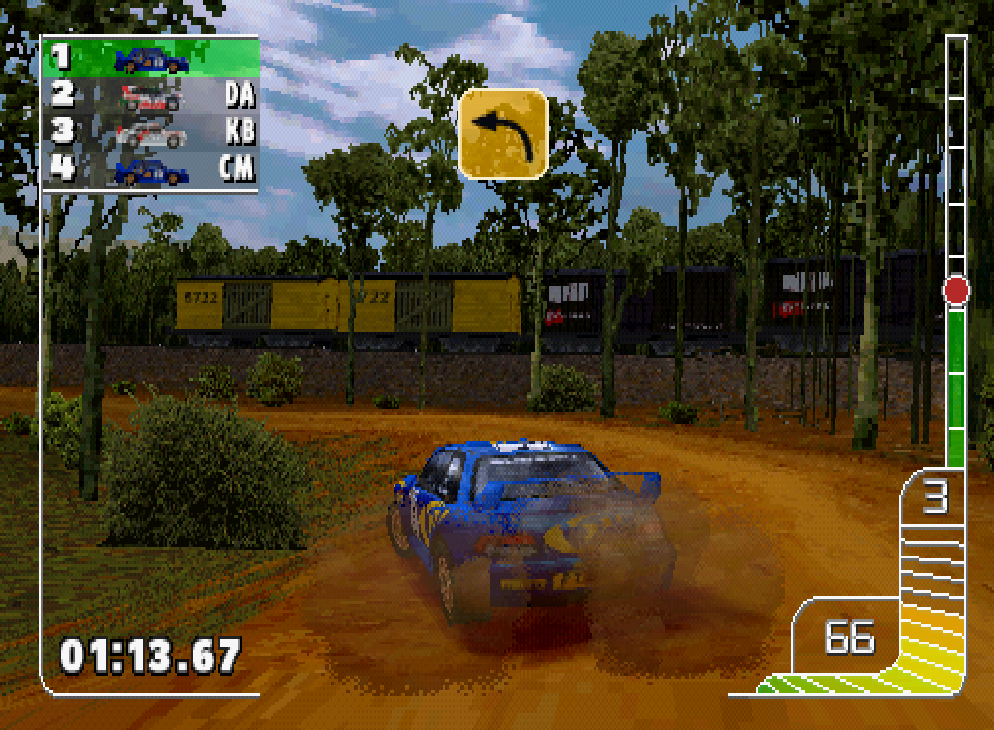
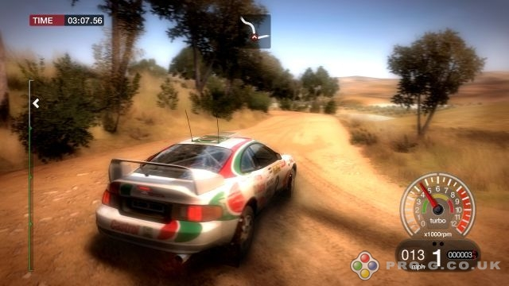
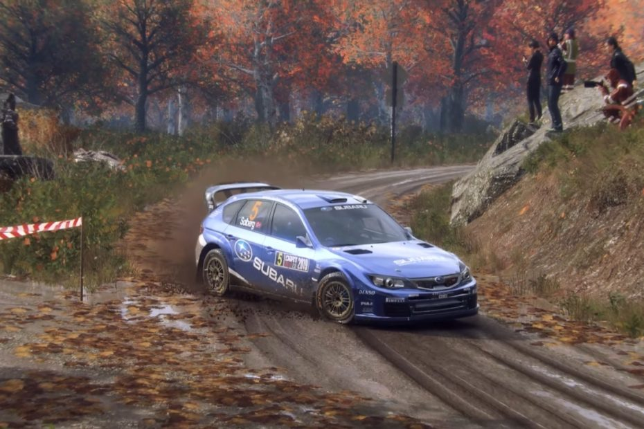
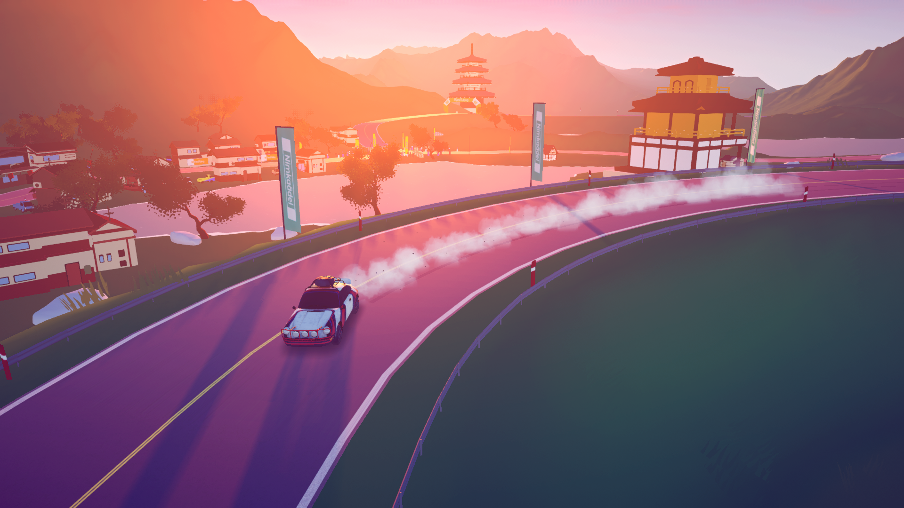
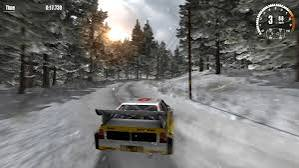

Richard Burns Rally (RBR), released in 2004, is a rally simulator developed with advice from world champion Richard Burns. Known for its demanding driving physics and challenging stages, it became a favorite among rally-game enthusiasts. Its dedicated fan community has kept it going with mods, new cars and stages, and online events long after its release.
  
The DiRT series grew out of Codemasters’ Colin McRae Rally games, which began in 1998. Starting with Colin McRae: DiRT in 2007, the series expanded beyond traditional rally stages to include events like rallycross, hill climbs and off-road racing. Some entries leaned into arcade-style action and stunts, while DiRT Rally and DiRT Rally 2.0 focused on more challenging, realistic rally driving.
  
Indie developers have brought fresh styles and ideas to rally games. Art of rally takes a relaxed, top-down approach, with minimalist visuals and cars inspired by rally history, letting players race across scenic stages from different eras.
Steam
Rush Rally 3 is a smaller-scale but content-rich rally game, with 3D stages, changing weather and surfaces, car damage, and both rally and rallycross events. Its approachable handling makes it a good option for players who want rally action without a full-on simulation.
 